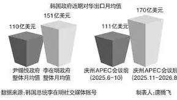
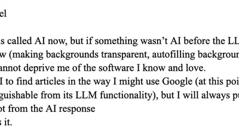
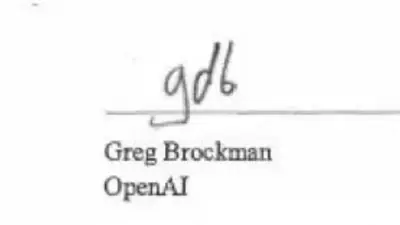

Matt Novak
@paleofuture.bsky.social
· 09/30 11:47· 命中「Anthropic」
The White House accord on AI that was signed by all the big tech oligarchs today misspells United States as “Unites States.”

7 200+ 次搜尋Social Lab（OpView 社群口碑資料庫）每週彙整各平台熱門事件。榜上的數據以圖表呈現， 這裡列出每週彙整的標題與觀測期間，點進去看完整排行。
 Dcard
Dcard
 Mobile01
Mobile01
 新聞
新聞
 Facebook 意見領袖
Facebook 意見領袖
Social Lab 依社群聲量統計的各平台人氣意見領袖前三名。
Bluesky 的全站熱門話題，以英語圈的娛樂、體育、政治為主，僅供參考。
以 30 小時內、依讚數與轉發數排序，已過濾掉 AI 繪圖標籤與明顯洗版內容。
The White House accord on AI that was signed by all the big tech oligarchs today misspells United States as “Unites States.”
I do think they probably ran his texts through an LLM and it hallucinated crimes. That’s scary and bad and it’s funny they got caught, but imagine how many other times this happens on a day to day basis against people with no rights, let alone the ability to publicly humiliate the AI prosecutor.
On the same day Trump announces that top tech firms have signed an accord to "self-police" their own AI development, we learned that OpenAI employees and security researchers were reportedly ignored when they brought safety concerns to the company's top executives. See the problem here?
A thing I learned not too long ago is that when an LLM selects a token that leads it down an incorrect path (factually), it has no way to back up, or even know that it should back up, it's just on to the next likely bit. Literally every LLM is just posting their way through it. What an image.
According to leaks, Anthropic reported a $42B net loss in 2025. This was revealed as Anthropic is preparing a massive IPO and even bigger investments in AI infrastructure. How worried should we be about the AI bubble bursting?
Hank Green suggested creators make AI codes of conduct and I thought that was a nice idea. Sometimes when I end up interacting with an LLM, I feel a pang of guilt like, does my audience know. So this is the situation

SORKIN: I'm half joking -- does OpenAI need to change its name? DNI JAY CLAYTON: Ha ha ha. You know what? Why don't you ask them, Andrew
🚨BREAKING: Claude has a feature called Friend Mode. It helps you pretend like you're not a goddamn loser who needs AI to interact with the outside world.
I reported vulnerabilities to the Linux kernel and OpenZFS assisted by GLM-5.2. Anthropic's cyber program and refusal responses are detrimental to global information security. Defenders depend on GLM because they can't depend on Anthropic.
Anthropic may not have intended to write an excellent ad for GLM 5.3, but that's what they did. www.anthropic.com/research/glm... Unlike Mythos, I might actually have a chance at using GLM for defensive research. Anthropic didn't reply to any of my requests for Mythos access for use on OpenSSH.
Typical OpenAI agent during its training run:
On Cinema Family RISE finance.yahoo.com/technology/a...
jesus, did Ms. Teacher have to guide his hand as he signed?

the average "If Anyone Builds It, Everyone Dies" guy is close friends with a bunch of people who are e/acc, works for an AI firm, and is implacable enemies with anyone who believes that Future Claude cannot psychically negotiate with Future ChatGPT simply by imagning what it wants very intensely.
America.gov runs off of Gemini and Grok (of course), by the way: www.cnbc.com/2026/09/29/t...